Software Engineer Intern
Buildify (Rehost)
Contributed to product development for a pre-seed startup, building tools and analyzing automation opportunities for business clients.
Welcome to my site!
Buildify (Rehost)
Contributed to product development for a pre-seed startup, building tools and analyzing automation opportunities for business clients.
CodeCheck
Contributed to an open-source education platform by improving deployment workflows and evaluating cloud infrastructure options.
Open Energy Dashboard (OED)
Developed backend integration tests for an open-source energy analytics platform, validating unit-conversion APIs against large time-series datasets.
Participant / Founder
Selected to participate in a deep-tech entrepreneurship program, exploring and developed DevSprite, a project focused on helping small businesses improve their online presence
ChatGPT Ambassador
Promoted responsible and practical AI adoption on campus through public speaking and discussions about AI's role in education and the future workforce

Emerging Leader for College Students
Selected for a Microsoft Security-sponsored professional development program focused on communication, confidence, leadership, and early-career growth
California State University, Long Beace (CSULB)
Studying computer engineering with a focus on software development, data structures and algorithms, operating systems, digital design, and computer hardware.
Orange Coast College (OCC)
Built a foundation in computer science and software development before transferring to pursue a bachelor's degree in computer engineering.
An Animal Crossing-inspired recipe catalog website where users can explore food recipes, view ingredients, and search or sort through different dishes.
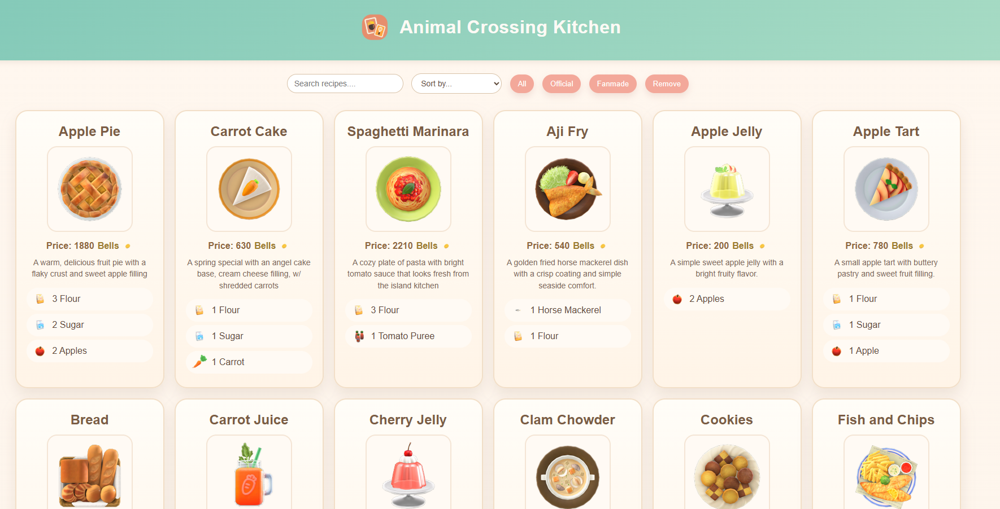
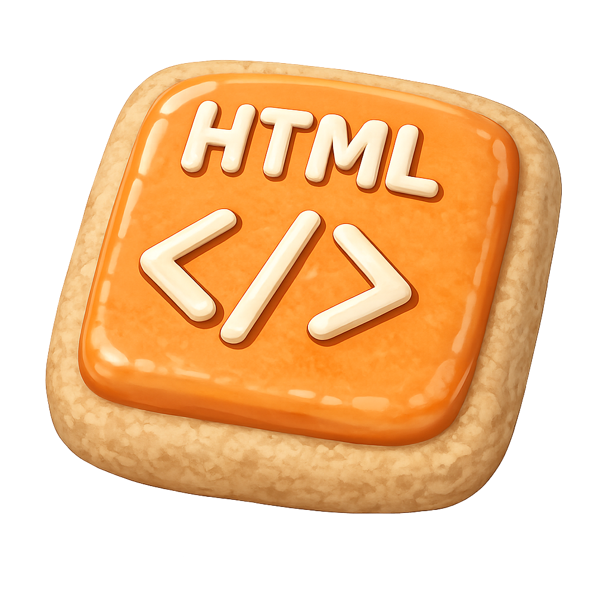
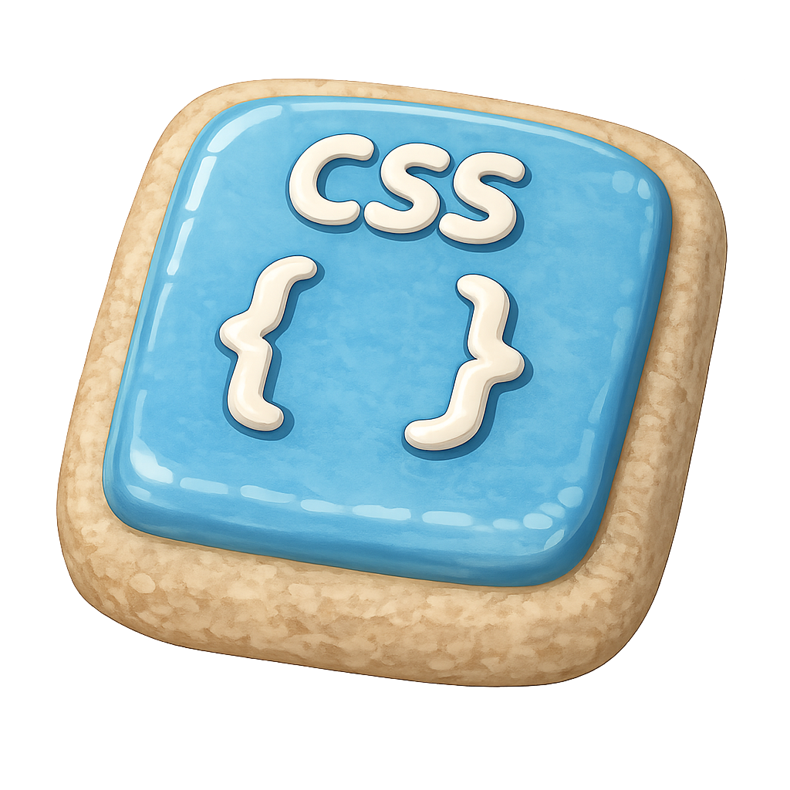
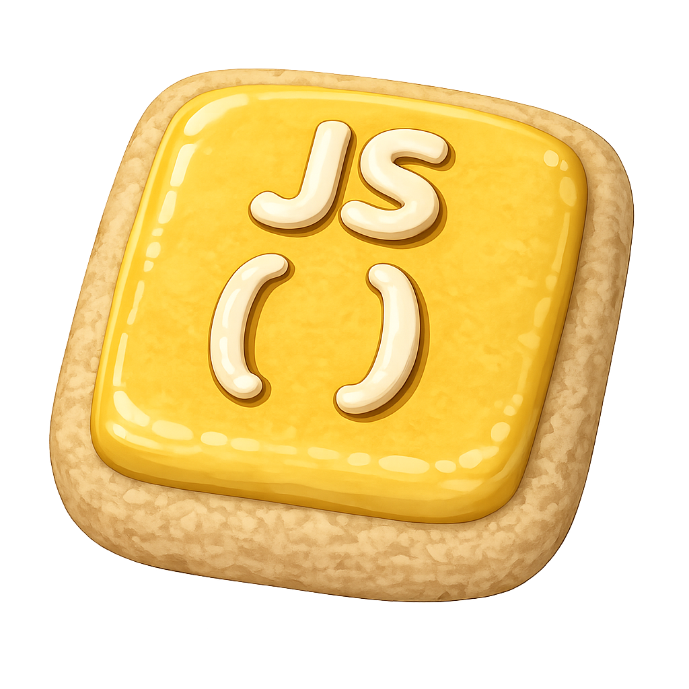
This project started as part of the second-stage assessment for Snap Engineering Academy. At the time, I was really into Animal Crossing: New Horizons, so I thought it would be fun to build something inspired by the game.
I used HTML to structure the page, CSS to create a cozy design inspired by Animal Crossing, and JavaScript to make the recipe catalog interactive.
Instead of manually writing out every recipe card in HTML, I organized the recipe information in a JSON file. Each recipe contains its name, image, price, description, and a list of ingredients. JavaScript then reads this data and dynamically generates the recipe cards on the page.
I also implemented features that allow users to search for recipes by name, sort them alphabetically or by price, and remove the last displayed card.
This project gave me more hands-on experience with JavaScript, especially working with arrays, objects, and dynamically updating webpage content. I also learned how useful it can be to separate data from the HTML structure, making a project easier to organize and expand.
I enjoyed being able to turn something I personally liked into a working website. It reminded me that projects don't always have to solve a serious problem to be meaningful. Sometimes, building something fun is a great way to explore new ideas and improve my skills.
A personal website I built to showcase my projects, technical skills, and experiences while creating a space that reflects who I am.
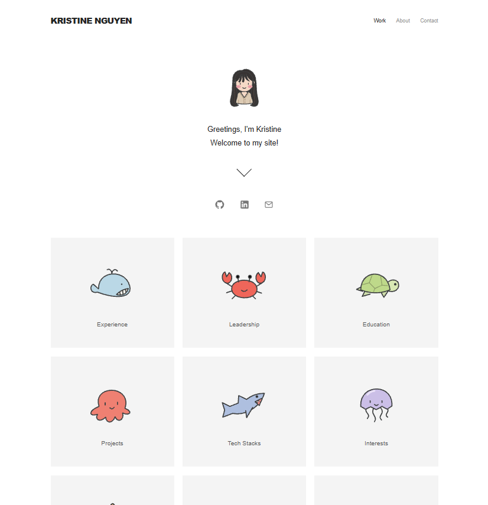
I wanted to create a space where I could share more about myself and the projects I've worked on.
I started by thinking about how I wanted to organize my experiences and present my work in a way that felt simple and easy to navigate. Using HTML, CSS, and JavaScript, I worked on structuring the different sections of the website, styling the layout, and adding interactive elements.
Building this portfolio helped me become more comfortable with front-end development and understand how small design decisions can affect the overall user experience. It also made me think more carefully about how to communicate my technical work to others. Since this website is an ongoing personal project, I plan to keep refining its design, improving its functionality, and adding new projects as I gain more experience.
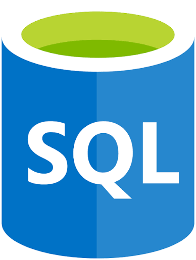
SQL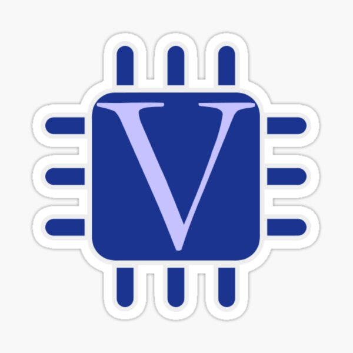
Verilog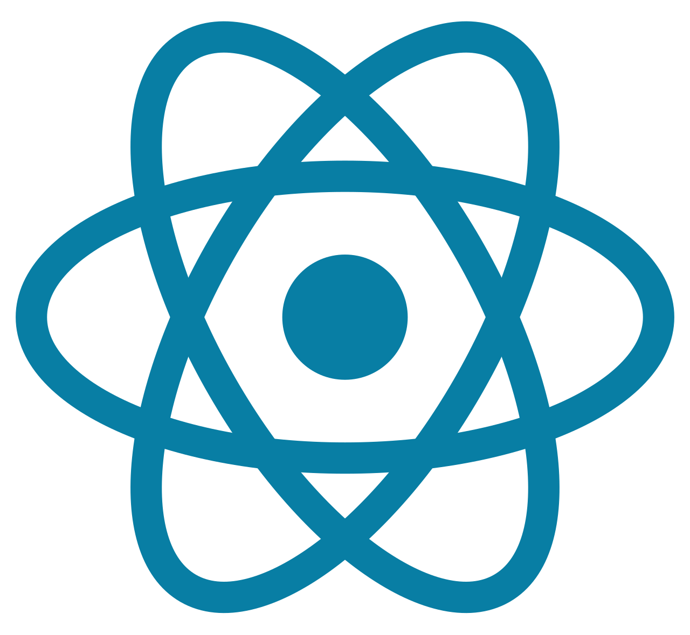
React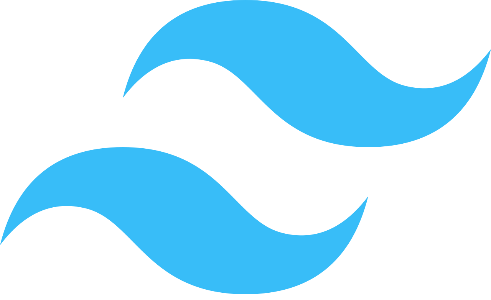
Tailwind CSS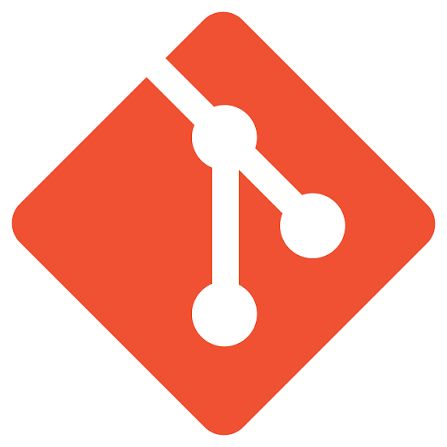
Git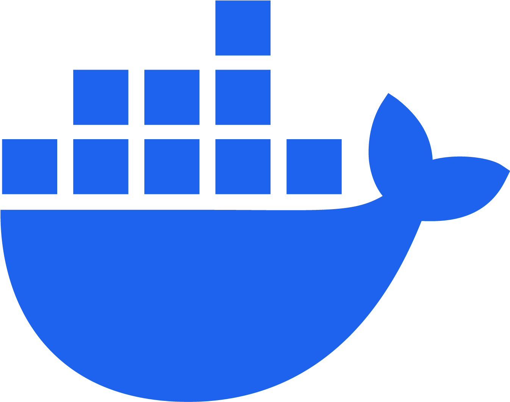
Docker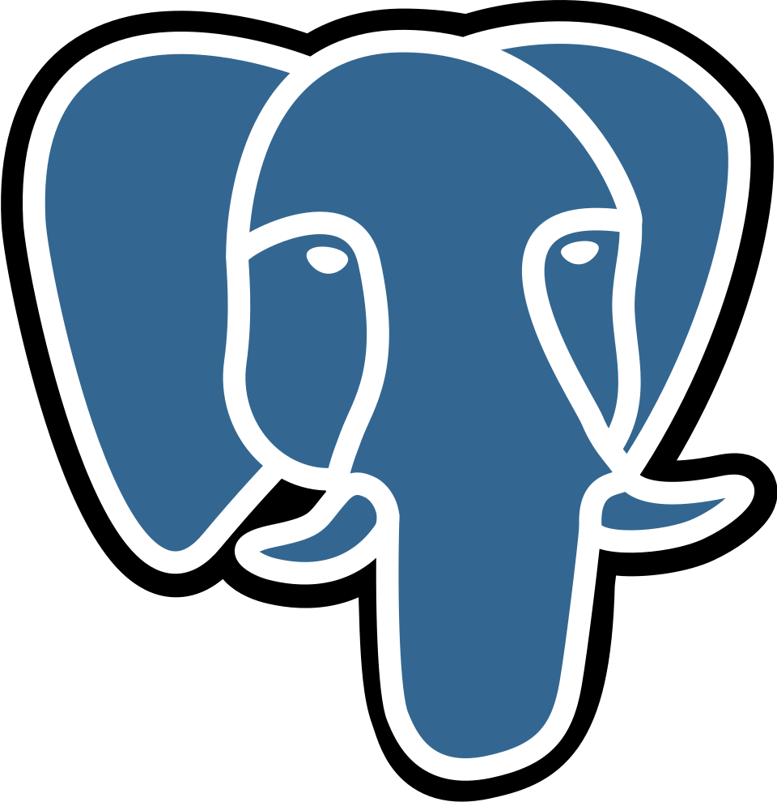
PostgreSQL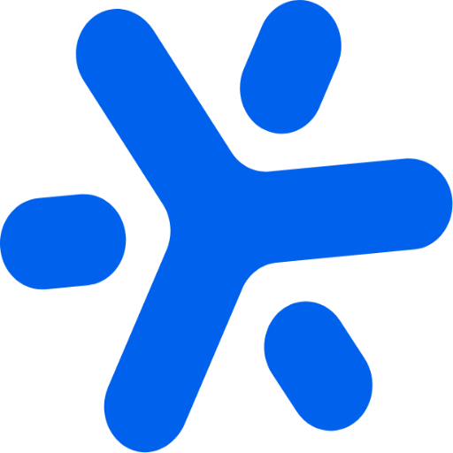
AkidaI'm interested in contributing to open-source projects and learning alongside other developers.
I'd like to explore AI and machine learning through hands-on projects.
I enjoy building & debugging the logic behind apps and the interfaces that people use.
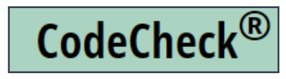
Before contributing to CodeCheck, I had used it as a student at Orange Coast College. It is an automated grading tool that lets students practice programming and receive feedback on their code. Working on a tool I had used in my own classes made this internship feel especially meaningful.
CodeCheck used AWS services alongside Google Cloud Run. My task was to explore an AWS alternative for its container deployments, helping simplify the infrastructure across cloud providers. With guidance from our mentor, Cay Horstmann, I worked with AWS App Runner and Elastic Container Registry (ECR) to deploy the comrun and play-codecheck Docker images.
I used the AWS command line interface and documented the deployment steps in build-instructions.md, so someone setting up the application could follow the commands.
One command could not connect to the App Runner endpoint in us-west-1. During the internship, I learned that App Runner was unavailable in that region at the time. Switching to us-west-2 resolved the endpoint error, and my mentor helped me address the ECR access-role configuration needed for authentication.
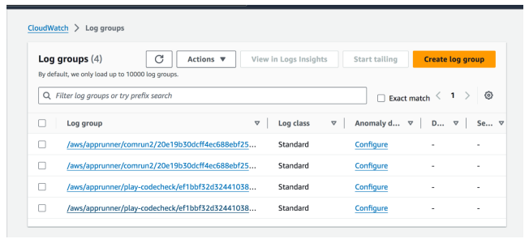
The next challenge was a failed health check for play-codecheck. I had reused the port configuration from comrun, but the application logs in CloudWatch showed that the Play application was listening on port 9000. Updating its configured port from 8080 to 9000 got the service running.
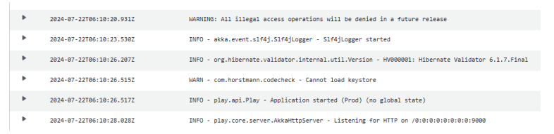
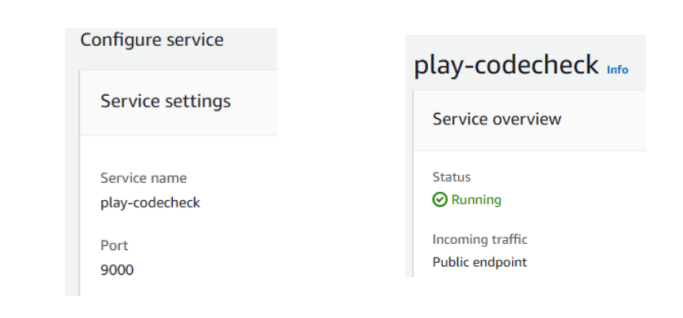
I got both services running, refined the deployment instructions, and submitted pull request #68!
I started the internship with a lot of self-doubt because the codebase and cloud tools were new to me. Working through these errors helped me learn to read logs, check configuration assumptions, and ask more specific questions. I also became more comfortable with Docker images, AWS CLI commands, JSON, Markdown, and GitHub.
I'm grateful to Cay Horstmann, my teammates Christian Barajas and Benjamin Khor, and CTI and CodeDay for helping me contribute to a project that had already been part of my education.
Open Energy Dashboard (OED) helps people explore energy-use data. During this internship, I worked with my team on testing how energy readings are converted and returned by the backend. This was an early experience navigating an open-source codebase and learning how expected data is used to check an API response.
Our work focused on test B9 in src/server/test/web/readingsBarMeterQuantity.js. It checks one-day bar readings from 15-minute input intervals, with no start or end time limit, and requests results in megajoules (MJ) from kilowatt-hour (kWh) meter data using a reverse conversion.
The test loads the units, conversions, and meter data, reads an expected CSV file, and calls /api/unitReadings/bar/meters/ for the test meter. It then compares the API response with the expected readings using Mocha and Chai.
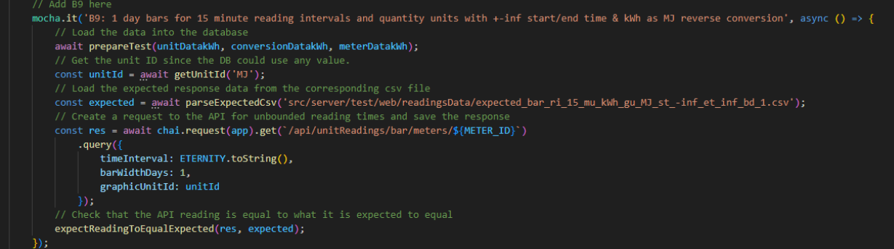
One challenge was preparing the expected-value file correctly. We initially entered a formula incorrectly and struggled to get the test to pass. The project's testing.md documentation helped us work through how the expected data should be generated and formatted.
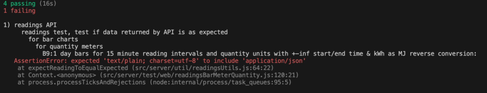
My team and I corrected values and metrics in an Excel spreadsheet and uploaded the updated data back into the testing workflow. We needed to pay attention to both the conversions and the file formatting so the expected data could be used by the test.
We reread the testing instructions, checked our formulas and data, and reached out to our mentor, Adam Hopkins, and CodeDay support for guidance. The draft captured a point when we had created an expected-value file but still had more conversion and formatting work to finish.
My team and I were able to fix the issue. The experience taught me that backend testing involves understanding the data as well as the code. It also helped me become more comfortable navigating GitHub, following technical documentation, and working with teammates when a test did not behave as expected.
Team pull request #1102 Testing documentation Open Energy Dashboard website
Add your experience here: what you did, your contributions, and what you learned.
Add another experience here. Copy an article block to include more entries in this topic.